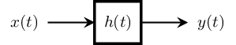
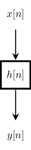
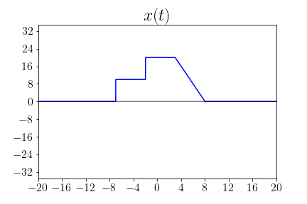
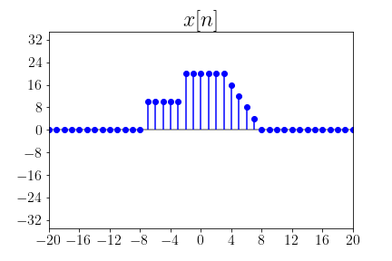
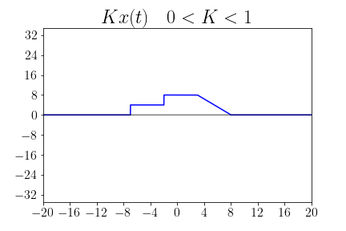
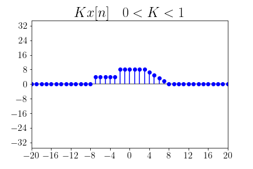
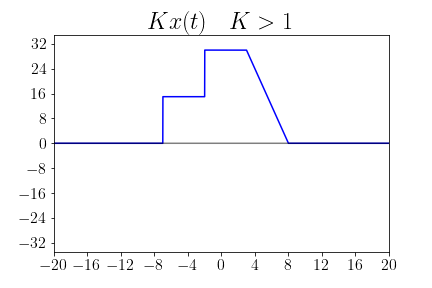
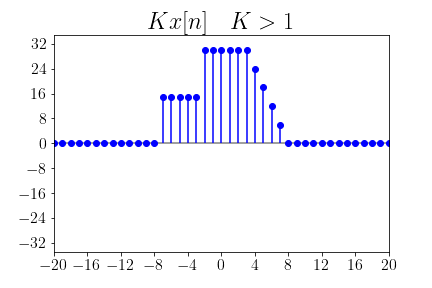

Systems and Transformations
Contents
Systems and Transformations¶
# HIDE/SHOW
# ! pip install -U sympy
# ! pip install -U numpy
# ! pip install -U matplotlib
# ! sudo apt install -y cm-super
# ! sudo apt install -y texlive texlive-latex-extra texlive-fonts-recommended dvipng
# HIDE/SHOW
# %reset -f
! rm -rfv *.png *.jpg
import os
import shutil
import warnings
warnings.filterwarnings('ignore')
from IPython.display import display, HTML
import sympy as sp
import numpy as np
from lcapy import Circuit
from sympy.abc import t, x, y
import matplotlib.pyplot as plt
from matplotlib.ticker import MaxNLocator
saved_dir = "systems"
if os.path.exists(saved_dir):
shutil.rmtree(saved_dir)
os.makedirs(saved_dir)
plt.rcParams['text.usetex'] = True
plt.rcParams['font.family'] = 'serif'
plt.rcParams['font.serif'] = ['Computer Modern Roman']
plt.rcParams['font.sans-serif'] = ['Computer Modern Sans Serif']
plt.rcParams['font.size'] = 24
plt.rcParams['figure.figsize'] = (12, 8)
plt.rcParams['axes.labelsize'] = 24
plt.rcParams['axes.titlesize'] = 24
plt.rcParams['xtick.labelsize'] = 16
plt.rcParams['ytick.labelsize'] = 16
%matplotlib inline
# HIDE/SHOW
def mpl_axes_plot(axes, expr, xrange, zero_is_none=False, **kwargs):
x, start, stop = xrange
func = sp.lambdify(x, expr)
x = np.linspace(start, stop, 10000)
y = func(x)
axes.tick_params(axis='x')
axes.tick_params(axis='y')
axes.xaxis.set_major_locator(MaxNLocator(integer=True))
axes.yaxis.set_major_locator(MaxNLocator(integer=True))
axes.grid(False)
axes.margins(0.02, 0.02)
if zero_is_none:
y[y==0] = np.nan
axes.plot(x, y, **kwargs)
axes.plot(x, np.zeros_like(x), color='k', alpha=0.5)
return axes
def mpl_axes_stem(axes, expr, xrange, zero_is_none=False, **kwargs):
x, start, stop, step = xrange
func = sp.lambdify(x, expr, ['numpy', 'sympy'])
x = np.arange(start, stop, step)
y = func(x)
axes.tick_params(axis='x')
axes.tick_params(axis='y')
axes.xaxis.set_major_locator(MaxNLocator(integer=True))
axes.yaxis.set_major_locator(MaxNLocator(integer=True))
axes.grid(False)
axes.margins(0.02, 0.02)
axes.plot(x, np.zeros_like(x), color='k', alpha=0.5)
if zero_is_none:
y[y==0] = np.nan
axes.stem(x, y, basefmt=" ", use_line_collection=True, **kwargs)
return axes
def mpl_axes_step(axes, expr, xrange, **kwargs):
x, start, stop, step = xrange
func = sp.lambdify(x, expr)
x = np.arange(start, stop, step)
y = func(x)
axes.tick_params(axis='x')
axes.tick_params(axis='y')
axes.xaxis.set_major_locator(MaxNLocator(integer=True))
axes.yaxis.set_major_locator(MaxNLocator(integer=True))
axes.grid(False)
axes.margins(0.02, 0.02)
axes.plot(x, np.zeros_like(x), color='k', alpha=0.5)
return axes.step(x, y, **kwargs)
What are Systems?¶
Systems are the mappings from input signals to output signals.
Systems are mathematical models that transform the input signals to the output signals.
Systems are mathematical models that transform single input signal to single output signal.
Types of Systems¶
Continuous-Time (CT) Systems.
Discrete-Time (CT) Systems.
Deterministic Systems.
Probabilistic Systems.
Continuous-time Systems |
Discrete-time Systems |
 |
|
|
 |

Classes of Systems¶
Memorial and Memoryless Systems¶
Causal and Noncausal Systems¶
Linear and Nonlinear Systems¶
Time-Invariant and Time-Varying Systems¶
Stable and Unstable Systems¶
Rigid Systems¶
# HIDE/SHOW
f = sp.Piecewise(
(0, t<-5),
(10, (t>=-5)&(t<0)),
(20, (t>=0)&(t<5)),
(40-4*t, (t>=5)&(t<10)),
(0, t>=10)
).subs(t, t+2)
Amplitude Scaling¶
# HIDE/SHOW
fig, ax = plt.subplots(1, 1)
mpl_axes_plot(ax, f, (t, -20, 20), color='b')
ax.set_xlim(-20, 20, 0.2)
ax.set_ylim(-35, 35, 0.2)
ax.set_title(r'$x(t)$')
plt.savefig(os.path.join(saved_dir,'signals_ct.png')); plt.close()
fig, ax = plt.subplots(1, 1)
mpl_axes_stem(ax, f, (t, -30, 30, 1), linefmt='b', markerfmt='bo')
ax.set_xlim(-20, 20, 0.2)
ax.set_ylim(-35, 35, 0.2)
ax.set_title(r'$x[n]$')
plt.savefig(os.path.join(saved_dir,'signals_dt.png')); plt.close()
fig, ax = plt.subplots(1, 1)
mpl_axes_plot(ax, 1.5*f, (t, -20, 20), color='b')
ax.set_xlim(-20, 20, 0.2)
ax.set_ylim(-35, 35, 0.2)
ax.set_title(r'$Kx(t) \quad K>1$')
plt.savefig(os.path.join(saved_dir,'signals_K_gt_1_ct.png')); plt.close()
fig, ax = plt.subplots(1, 1)
mpl_axes_stem(ax, 1.5*f, (t, -30, 30, 1), linefmt='b', markerfmt='bo')
ax.set_xlim(-20, 20, 0.2)
ax.set_ylim(-35, 35, 0.2)
ax.set_title(r'$Kx[n] \quad K>1$')
plt.savefig(os.path.join(saved_dir,'signals_K_gt_1_dt.png')); plt.close()
fig, ax = plt.subplots(1, 1)
mpl_axes_plot(ax, 0.4*f, (t, -20, 20), color='b')
ax.set_xlim(-20, 20, 0.2)
ax.set_ylim(-35, 35, 0.2)
ax.set_title(r'$Kx(t) \quad 0<K<1$')
plt.savefig(os.path.join(saved_dir,'signals_K_gt_0_lt_1_ct.png')); plt.close()
fig, ax = plt.subplots(1, 1)
mpl_axes_stem(ax, 0.4*f, (t, -30, 30, 1), linefmt='b', markerfmt='bo')
ax.set_xlim(-20, 20, 0.2)
ax.set_ylim(-35, 35, 0.2)
ax.set_title(r'$Kx[n] \quad 0<K<1$')
plt.savefig(os.path.join(saved_dir,'signals_K_gt_0_lt_1_dt.png')); plt.close()
 |
 |
 |
 |
 |
 |
Amplitude Reversal¶
Time Shifting¶
Time Scaling¶
Time Reversal¶
Combined Operations¶
Method 1: Shift, then Scale (Recommended)¶
Define \(\quad s(t) = x\left(t+b\right) \quad\) |
Add/Subtract to \(t\) only, first |
Define \(\quad y(t) = s\left(at\right) = x\left(at+b\right) \quad\) |
Multiply/Divide to \(t\) only, later |
Method 2: Scale, then Shift¶
Define \(\quad s(t) = x\left(at\right)\quad\) |
|
Define \(\quad y(t) = s\left(t+\dfrac{b}{a}\right) = x\left(at+b\right) \quad\) |